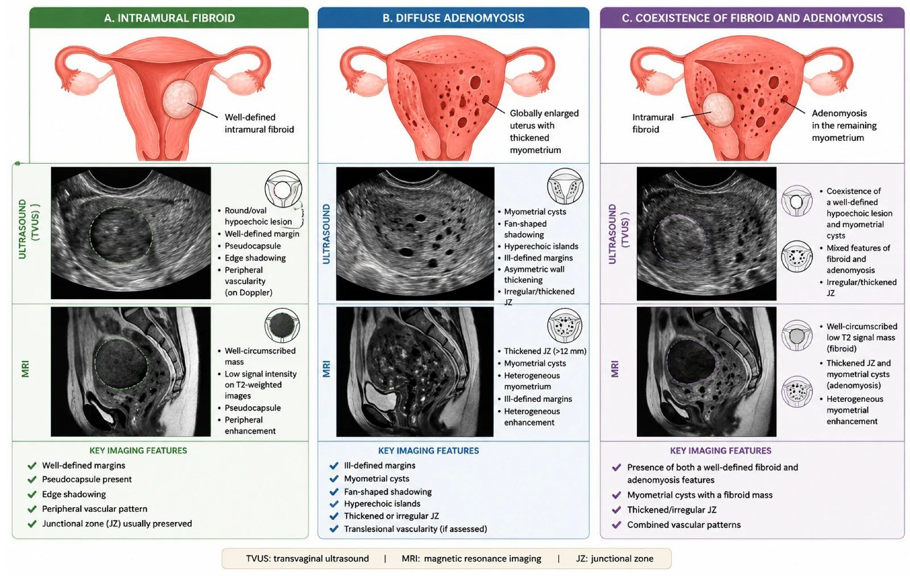
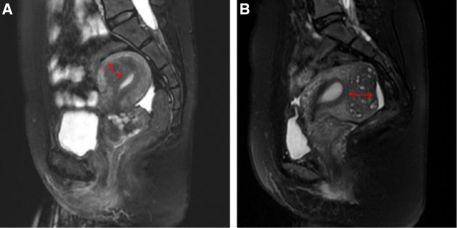
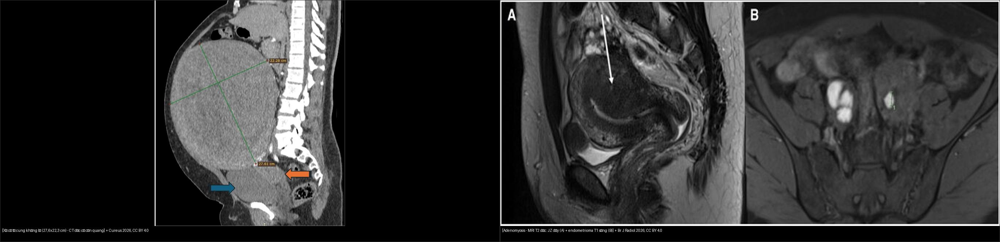
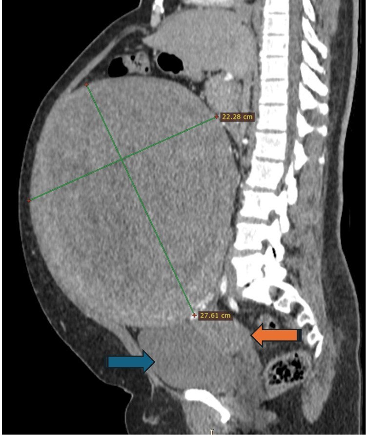

520 — Tử cung: xơ FIGO 0–8, adenomyosis & nội mạc / Fibroids vs adenomyosis
Tags: pattern:khoi-tu-cung vung:tu-cung score:FIGO
Mức chắc chắn (certainty): tổng hợp y văn (literature synthesis) — nhóm tự biên từ y văn mở, chưa gắn ca nguyên văn đơn lẻ.
1. Tổng quan — có vỏ hay không + JZ bao nhiêu mm + nội mạc bao nhiêu mm
- U xơ (leiomyoma): u cơ đơn dòng có vỏ giả (pseudocapsule) + mạch bao quanh (bridging vessel) — TẠI SAO bờ rõ + đẩy lệch JZ: u đẩy mô lành ra ngoài tạo vỏ.
- Adenomyosis: tuyến nội mạc lạc vào cơ + cơ phì đại — TẠI SAO JZ ≥ 12 mm + nang T2 2–5 mm + mạch xuyên: tuyến lạc + cơ phản ứng lan tỏa, không vỏ (≤ 8 mm bình thường, 8–12 mm vùng xám). Phân biệt nội (internal — JZ dày ≥ 12 mm và tỷ lệ JZ/cơ cùng bên > 40%) vs ngoại (external — ổ ngoài JZ).
- Nội mạc mãn kinh chảy máu: ≤ 4 mm loại trừ K (> 99%), ≥ 5 mm sinh thiết — TẠI SAO: nội mạc teo không thể giấu K dày.
- Phân loại FIGO 0–8 u xơ (quyết định ngả đường mổ): 0 có cuống trong buồng; 1 trong cơ < 50% thể tích nằm trong buồng; 2 trong cơ ≥ 50% trong buồng (0–2 = soi buồng, độ 2 đôi khi hai thì); 3 tiếp giáp nội mạc nhưng 100% trong cơ; 4 trong cơ hoàn toàn; 5 dưới thanh mạc ≥ 50% trong cơ; 6 dưới thanh mạc < 50% trong cơ (3–6 = nội soi ổ bụng/cắt u); 7 dưới thanh mạc có cuống; 8 ở nơi khác (cổ tử cung, ký sinh, dây chằng rộng — 7–8 = nội soi ổ bụng). Loại 2–5 dùng chung ký hiệu ghép (vd 2-5).
2. Gamut khối/dày tử cung (Gamut)
- Bờ rõ + vỏ giả + mạch bao + T2 tối: xơ (FIGO 0–8 quyết định soi buồng/mổ bụng).
- Không vỏ + JZ ≥ 12 mm + nang T2 + mưa rào: adenomyosis — LNG-IUS/GnRH (khó bóc!).
- Lớn nhanh + T2/DWI không đều + ADC thấp: sarcoma — mổ rộng (không bào nhỏ!).
- Mãn kinh + chảy máu + ≥ 5 mm: sinh thiết nội mạc (polyp có cuống mạch đơn độc).
3. Bảng so sánh phân biệt (ma trận đối chiếu)
| Thực thể (entity) | Hình ảnh điển hình | Chốt vào (rule-in) | Chốt loại (rule-out) | Gợi ý xác nhận |
|---|---|---|---|---|
| U xơ FIGO | Bờ rõ + vỏ giả + mạch bao + T2 tối + FIGO 0–8 | Vỏ + bridging vessel + đẩy JZ | Không vỏ + JZ dày → adeno | FIGO 0–2 soi buồng; 5–7 mổ bụng |
| Adenomyosis | JZ ≥ 12 mm + nang 2–5 mm + xuyên mạch + mưa rào | JZ + nang + không vỏ | Vỏ giả + mạch bao → xơ | LNG-IUS/GnRH; khó bóc |
| Sarcoma | Lớn nhanh + T2/DWI không đều + ADC thấp + hoại tử | Tăng trưởng nhanh + không đều | Bờ rõ + T2 tối đều → xơ | Mổ rộng nguyên khối |
| Dày nội mạc | Mãn kinh + chảy máu + ≥ 5 mm; polyp cuống mạch | ≥ 5 mm + chảy máu = sinh thiết | ≤ 4 mm → loại trừ (> 99%) | Soi buồng + nạo sinh thiết |
(A) xơ bờ rõ + vỏ giả; (B) adeno JZ dày + nang; (C) đồng tồn tại 30–50%. Nguồn: Pecorella et al., Diagnostics 2026 Fig. 1, CC BY 4.0.

Cột A — xơ trong cơ (intramural fibroid): TVUS khối giảm âm bờ rõ + bóng bờ + mạch ngoại vi; MRI khối bờ rõ + T2 tối + vỏ giả + ngấm mạch ngoại vi, JZ thường còn. Cột B — adenomyosis lan tỏa: TVUS cơ dày không đối xứng + nang cơ + bóng hình quạt; MRI JZ > 12 mm + nang cơ (T2/T1 sáng) + cơ đồng nhất kém, bờ không rõ. Cột C — đồng tồn tại cả hai (30–50%). Nguồn: Diagnostics 2026 (PMC13605732), CC BY 4.0.
(A) Adenomyosis nội (internal): JZ dày ≥ 12 mm và tỷ lệ JZ/cơ cùng bên > 40% (mũi tên đỏ). (B) Adenomyosis ngoại (external): ổ lạc nội mạc ngoài JZ. Nguồn: Medicine 2026 (PMC13313630), CC BY 4.0.
Trái: xơ dưới thanh mạc khổng lồ 27,6 × 22,3 cm (CT dọc có cản quang — khối bờ rõ, đẩy lệch tạng). Phải: adenomyosis (MRI T2 dọc — JZ dày lan tỏa, không có vỏ/khối khu trú). Nguồn: Cureus 2026 (PMC13263843) + Br J Radiol 2026 (PMC13070643), CC BY 4.0. Ảnh ghép letterbox.4. Protocol tử cung
- TVUS (MUSA) + MRI T2 (JZ mm) + Doppler khi rong kinh/đau; soi buồng + sinh thiết khi nội mạc ≥ 5 mm mãn kinh chảy máu.
flowchart TD
A[Rong kinh/đau + khối tử cung] --> B{Có vỏ giả?}
B -->|Có + FIGO| C[Xơ: soi/mổ theo FIGO]
B -->|Không + JZ≥12| D[Adeno: LNG-IUS/GnRH]
B -->|Lớn nhanh + ADC thấp| E[Sarcoma: mổ rộng]
5. Cạm bẫy
- Đồng tồn tại xơ + adeno 30–50% mổ xơ xong vẫn đau — MRI JZ trước mọi mổ xơ.
- Bào nhỏ sarcoma tưởng xơ gieo khắp ổ bụng — lớn nhanh + ADC thấp là mổ nguyên khối.
- Adenomyoma khu trú giả xơ — không vỏ + nang + xuyên mạch mới là adeno.
6. Tự lượng giá — Blind Quiz
Ca 1 — Rong kinh + tử cung to. Đọc bảng so sánh TVUS/MRI: cột nào là xơ, cột nào là adeno, dấu chốt mỗi bên?
- Gợi ý lâm sàng: nữ 40 tuổi, rong kinh + đau bụng kinh, tử cung to.
- Câu hỏi: Ba cột A/B/C là gì? Dấu MRI nào chốt mỗi cột?
Bấm để hiện đáp án (findings + chẩn đoán)
- Dấu hiệu (findings): (A) khối bờ rõ + vỏ giả + T2 tối + ngấm mạch ngoại vi, JZ còn = xơ trong cơ; (B) JZ > 12 mm + nang cơ + bờ không rõ = adenomyosis lan tỏa; (C) cả hai cùng lúc = đồng tồn tại (30–50%).
- Chẩn đoán (diagnosis): phân biệt xơ vs adenomyosis bằng vỏ giả + JZ mm — đồng tồn tại cao nên đừng bỏ sót bên còn lại.
- Nguồn ảnh: Diagnostics 2026 (PMC13605732), CC BY 4.0.
Ca 2 — MRI T2 dọc: JZ dày đến đâu thì gọi adenomyosis nội?
- Câu hỏi: Đo JZ bằng ngưỡng nào? Tỷ lệ JZ/cơ cùng bên bao nhiêu thì dương?
Bấm để hiện đáp án (findings + chẩn đoán)
- Dấu hiệu: (A) adenomyosis nội — JZ dày tối đa ≥ 12 mm và tỷ lệ JZ/cơ cùng bên > 40% (mũi tên đỏ); (B) adenomyosis ngoại — ổ lạc ngoài JZ.
- Chẩn đoán: ngưỡng JZ ≥ 12 mm (≤ 8 mm bình thường; 8–12 mm vùng xám) + nang cơ T2/T1 sáng + không vỏ.
- Nguồn ảnh: Medicine 2026 (PMC13313630), CC BY 4.0.
Ca 3 — Khối bụng khổng lồ ở nữ, CT dọc có cản quang.

- Câu hỏi: Bờ khối ra sao (so với adenomyosis)? Đo kích thước? Thuộc nhóm FIGO nào?
Bấm để hiện đáp án (findings + chẩn đoán)
- Dấu hiệu: khối bờ RÕ, đồng nhất, có vỏ phát từ thân tử cung, đo 27,6 × 22,3 cm (mũi tên xanh = bàng quang, cam = tử cung) — xơ dưới thanh mạc khổng lồ.
- Chẩn đoán: khác adenomyosis ở bờ rõ + có vỏ + không lan tỏa JZ; FIGO 6/7 (dưới thanh mạc) → nội soi ổ bụng/cắt u (không bào nhỏ nếu nghi sarcoma).
- Đối chiếu composite: — trái: khối bờ rõ có vỏ (xơ); phải: JZ dày lan tỏa không vỏ (adenomyosis).
- Nguồn ảnh: Cureus 2026 (PMC13263843) + Br J Radiol 2026 (PMC13070643), CC BY 4.0.
Ca 4 — Mãn kinh + ra máu + nội mạc 8 mm: theo dõi hay sinh thiết? (Bảng mục 3.)
Bấm để hiện đáp án (findings + chẩn đoán)
- Sinh thiết bắt buộc: ≥ 5 mm + chảy máu (≤ 4 mm mới loại trừ > 99%); soi buồng + nạo sinh thiết.
Bài liên quan chéo
- 500 – Tổng quan Vú & SPK
- [525 – K nội/cổ tử cung (dự kiến viết sau)]
- 540 – DIE (adeno + DIE)
Không dùng để chẩn đoán độc lập khi chưa có người hướng dẫn.